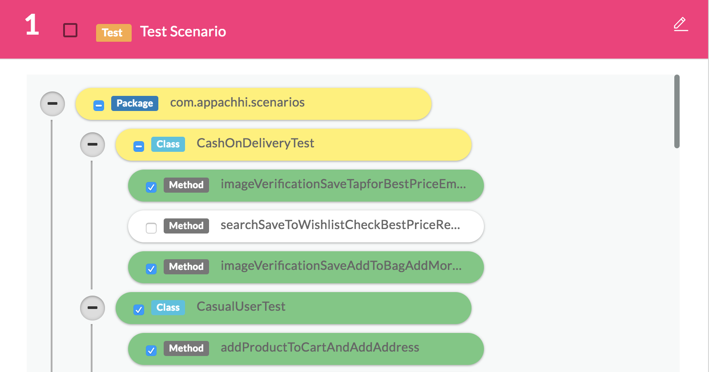
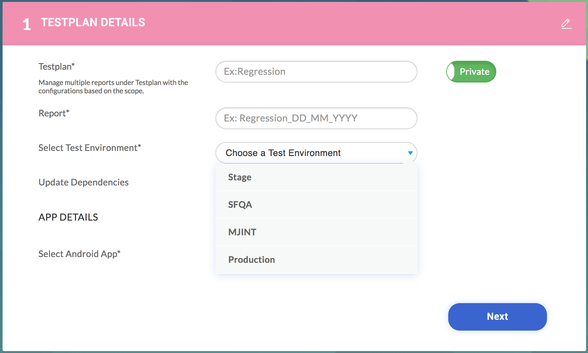
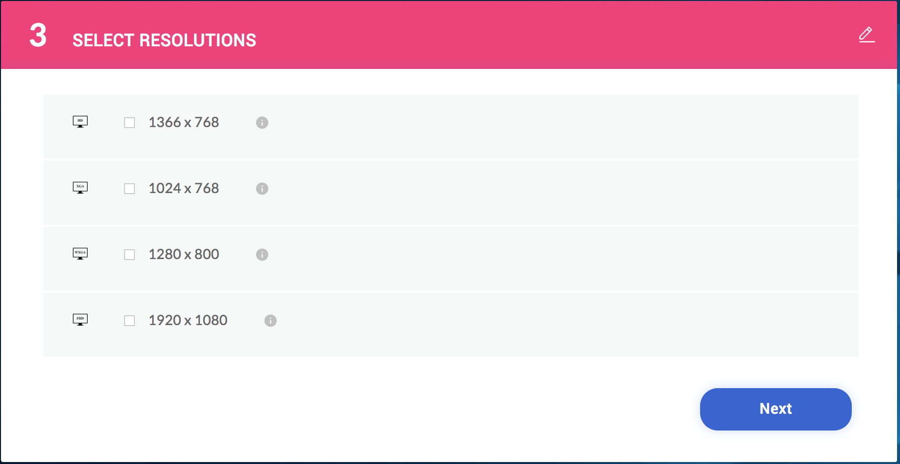

Scope :
This document details the steps required to enable your Appium or Selenium scripts to run on the Appachhi Platform.
Steps :
Capabillity parameters as command line arguments
There are various build tools available out there in the market like Ant, Maven, Gradle, CMake, Groovy and also TestNG itself. But as per our current implementation of Appachhi platform, we recommend you to use either Maven or Gradle as build tools for your appium/selenium test scripts.
Mandatory desired capabilities to be included
Make sure you have defined at least one testng xml anywhere in your Script. We make use of TestNG xml to recognize what is your testing scope, which package/class/test/method you want to run on our platform.
Here’s a sample TestNG code for reference
<?xml version="1.0" encoding="UTF-8"?>
<!DOCTYPE suite SYSTEM "http://testng.org/testng-1.0.dtd">
<suite name="SuiteName">
<test name="Test Case 1">
<classes>
<class name="com.company.group.package1.class"/>
</classes>
</test>
<test name="Test Case 2" thread-count="1">
<packages>
<package name="com.company.group.package2"/>
</packages>
</test>
</suite>
And also a snapshot of how your selection will be shown in our platform
For detailed reference on declaring your TestNG xml, please refer following link.
Capability setting for installing app on device
Appachhi requires control over few of the components in the scripts like Device ID, Selenium/Appium Hub URL, Application path, Screenshot path etc. Below are the different ways to set your capabilities.
-
Hardcode -
desiredCapabilities.setBrowserName(“Safari”); -
Set using TestNG Parameter -
Define parameters in your TestNG xml and utilize them in your scripts using @Parameters annotation.
Using config properties like build.properties, pom.xml or even your custom config.ini file.
-
Using command line system properties accessed via
System.getProperty(“property_index”)
Appachhi expects all the below mentioned parameters are read in your scripts as command-line system properties and configure them accordingly.
Ex:
# Define the desired capability for browser as
String browser = System.getProperty(browser);
DesiredCapabilities caps = new DesiredCapabilities();
caps.setBrowserName(browser);
mvn -Dbrowser="chrome" test
This will help us to control all the desired capabilities via command line
Implement assertions at the test level
Some of the desired capabilities that should be defined without fail include:
- Native Android/iOS App
- Device serial ID
- Appium/Selenium Hub URL
- Application Path (apk/ipa)
- Screenshot path - Path to where the screenshots to be stored for each click
- Environment
- Channel
- Platform version ( device OS version )
- Device name
- Android / iOS Mobile Web
- Device serial ID - [Refer 4.a]
- Appium/Selenium Hub URL - [Refer 4.a]
- Screenshot path - [Refer 4.a]
- Browser Name
- Channel
- Web Application URL
- Environment - [Refer 4.a]
- Desktop Web
- Web Application URL - [Refer 4.b.vi]
- Screenshot path - [Refer 4.a]
- Browser Resolution - Indicates the resolution of the browser in concern
- Browser Version - Desktop browser version to be set
- Browser Binary File path - Browser installation path
- Browser WebDriver Path - Path where browser driver is located
- Channel
- Environment - [Refer 4.a]
mobile_udid - (Ex: -Dmobile_udid=CSDWUJ652JK)
Usage - caps.setCapability("udid",System.getProperty("mobile_udid"));
appium_url - (Ex: appium_url=http://127.0.0.1:4723/wd/hub)
Usage - new AppiumDriver(new URL(System.getProperty( "appium_url")), caps);
app_file_path - (Ex: app_file_path=D:\User\admin\apks\sample.apk or /Users/admin/Downloads/sample.ipa)
Usage
# Read path of the apk/ipa using command line system property
File app = new File(System.getProperty(“app_file_path”));
# Set the capability using the absolute local path to the apk/ipa
caps.setCapability("app", app.getAbsolutePath());
screenshot_path - (Ex: screenshot_path=D:\User\Script\screenshots)
Usage
TakesScreenshot source = ((TakesScreenshot) driver);
TakesScreenshot source = ((TakesScreenshot) driver);
File SrcFile = source.getScreenshotAs(OutputType.FILE);
File DestFile = new File( System.getProperty(“screenshot_path”)+File.separator+screenshot_name +".jpg");
FileUtils.copyFile(SrcFile, DestFile);
environment - (Ex: environment=PROD/TEST/LIVE )
Usage - Although this might not be required in everyone’s case, but if you have written scripts which behaves differently for live environment and test environment, you can make use of this property to differentiate between them, else you can completely ignore this. This is provided to your script from Appachhi platform using the TestRun creation form.
channel - ( Ex: ANDROID/IOS)
Usage - Again, this depends on the scenario, if you have written single script to cater multiple platforms like ANDROID/IOS, you need to read this system property and switch between platforms. Else, you can just ignore it.
platform_version - ( Ex: platform_version=6.0/7.1.1,11.4 etc.. )
Usage
caps.setCapability(MobileCapabilityType.PLATFORM_VERSION, System.getProperty("platform_version"));
device_name - ( Ex: device_name=Google Nexus 5s/ iPhone 5s )
Usage
caps.setCapability(MobileCapabilityType.DEVICE_NAME, System.getProperty("device_name"));
browser - ( Ex: browser=chrome/safari )
Usage - Indicates which browser to launch the mobile web test on.
caps.setCapability(MobileCapabilityType.BROWSER_NAME, System.getProperty("browser"));
channel - ( Ex: ANDROID_MWEB/IOS_MWEB)
app_browser_url - ( Ex: app_browser_url=https://www.myntra.com )
Usage - Indicates URL of the web application to run scripts on.
Refer screenshot to know how the resolution will be selected on Appachhi platform
browser_resolution_width - ( Ex: browser_resolution_width=1024 )
browser_resolution_height - ( Ex: browser_resolution_height=768 )
Usage
Dimension resolution = new
Dimension(Integer.parseInt(System.getProperty("browser_resolution_width")),Integer.parseInt(System.getProperty("browser_resolution_height")));
driver.manage().window().setSize(resolution);
browser_version - ( Ex: browser_version=64.1 )
Usage
caps.setCapability(CapabilityType.BROWSER_VERSION,System.getProperty("browser_version”);
browser_bin_path - ( Ex: browser_bin_path = D:\User\admin\browsers\Chrome\chrome64.exe or /Applications/Google\ Chrome.app/MacOS/Contents/Google\ Chrome )
Usage
System.setProperty("webdriver.chrome.bin", System.getProperty( "browser_bin_path"));
System.setProperty("webdriver.firefox.bin", System.getProperty( "browser_bin_path"));
Again configuration depends on browser property.
browser_driver_path - ( Ex: browser_driver_path = D:\User\admin\browsers\drivers\geckodriver.exe or /Users/admin/Downloads/drivers/geckodriver )
Usage
System.setProperty("webdriver.chrome.driver", System.getProperty( "browser_driver_path"));
System.setProperty("webdriver.gecko.driver", System.getProperty( "browser_driver_path"));
channel - ( Ex: DESKTOP_WEB)